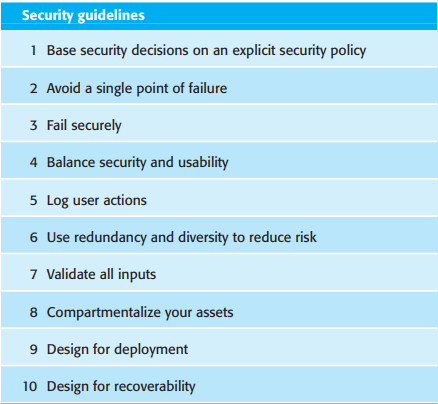
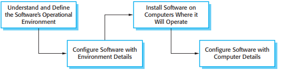

It is generally true that it is very difficult to add security to a system after it has been
implemented. Therefore, you need to take security issues into account during the
systems design process. In this section, I focus primarily on issues of system design,
because this topic isn’t given the attention it deserves in computer security books.
Implementation issues and mistakes also have a major impact on security but these
are often dependent on the specific technology used. I recommend Viega and
McGraw’s book (2002) as a good introduction to programming for security.
Here, I focus on a number of general, application-independent issues relevant to
secure systems design:
- Architectural design—how do architectural design decisions affect the security
of a system?
-
Good practice—what is accepted good practice when designing secure systems?
-
Design for deployment—what support should be designed into systems to avoid
the introduction of vulnerabilities when a system is deployed for use?
Denial of service attacks
Denial of service attacks attempt to bring down a networked system by bombarding it with a huge number of
service requests. These place a load on the system for which it was not designed and they exclude legitimate
requests for system service. Consequently, the system may become unavailable either because it crashes with
the heavy load or has to be taken offline by system managers to stop the flow of requests.
http://www.SoftwareEngineering-9.com/Web/Security/DoS.html
Of course, these are not the only design issues that are important for security. Every
application is different and security design also has to take into account the purpose,
criticality, and operational environment of the application. For example, if you are
designing a military system, you need to adopt their security classification model
(secret, top secret, etc.). If you are designing a system that maintains personal information, you may have to take into account data protection legislation that places
restrictions on how data is managed.
There is a close relationship between dependability and security. The use of
redundancy and diversity, which is fundamental for achieving dependability, may
mean that a system can resist and recover from attacks that target specific design or
implementation characteristics. Mechanisms to support a high level of availability
may help the system to recover from so-called denial of service attacks, where the
aim of an attacker is to bring down the system and stop it working properly.
Designing a system to be secure inevitably involves compromises. It is certainly
possible to design multiple security measures into a system that will reduce the
chances of a successful attack. However, security measures often require a lot of
additional computation and so affect the overall performance of a system. For example, you can reduce the chances of confidential information being disclosed by
encrypting that information. However, this means that users of the information have
to wait for it to be decrypted and this may slow down their work.
There are also tensions between security and usability. Security measures sometimes require the user to remember and provide additional information (e.g., multiple passwords). However, sometimes users forget this information, so the additional
security means that they can’t use the system. Designers therefore have to find a balance between security, performance, and usability. This will depend on the type of
system and where it is being used. For example, in a military system, users are familiar with high-security systems and so are willing to accept and follow processes that
require frequent checks. In a system for stock trading, however, interruptions of
operation for security checks would be completely unacceptable.
14.2.1 Architectural design
________________________________________________________________________________________________
As I have discussed in Chapter 11, the choice of software architecture can have
profound effects on the emergent properties of a system. If an inappropriate
architecture is used, it may be very difficult to maintain the confidentiality and integrity of information in the system or to guarantee a required level of system
availability
In designing a system architecture that maintains security, you need to consider
two fundamental issues:
- Protection—how should the system be organized so that critical assets can be
protected against external attack?
- Distribution—how should system assets be distributed so that the effects of a
successful attack are minimized?
These issues are potentially conflicting. If you put all your assets in one place,
then you can build layers of protection around them. As you only have to build a
single protection system, you may be able to afford a strong system with several
protection layers. However, if that protection fails, then all your assets are compromised. Adding several layers of protection also affects the usability of a system so
it may mean that it is more difficult to meet system usability and performance
requirements.
On the other hand, if you distribute assets, they are more expensive to protect
because protection systems have to be implemented for each copy. Typically, then,
you cannot afford as many protection layers. The chances are greater that the protection will be breached. However, if this happens, you don’t suffer a total loss. It may
be possible to duplicate and distribute information assets so that if one copy is corrupted or inaccessible, then the other copy can be used. However, if the information
is confidential, keeping additional copies increases the risk that an intruder will gain
access to this information.
For the patient record system, it is appropriate to use a centralized database architecture. To provide protection, you use a layered architecture with the critical protected assets at the lowest level in the system, with various layers of protection
around them. Figure 14.4 illustrates this for the patient record system in which the
critical assets to be protected are the records of individual patients.
In order to access and modify patient records, an attacker has to penetrate three
system layers:
- Platform-level protection The top level controls access to the platform on which
the patient record system runs. This usually involves a user signing on to a particular computer. The platform will also normally include support for maintaining the integrity of files on the system, backups, etc
- Application-level protection The next protection level is built into the application itself. It involves a user accessing the application, being authenticated, and
getting authorization to take actions such as viewing or modifying data.
Application-specific integrity management support may be available.
- Record-level protection This level is invoked when access to specific records is
required, and involves checking that a user is authorized to carry out the
requested operations on that record. Protection at this level might also involve
encryption to ensure that records cannot be browsed using a file browser.
Integrity checking using, for example, cryptographic checksums, can detect
changes that have been made outside the normal record update mechanisms.

Figure 14.4 A layered protection architecture
The number of protection layers that you need in any particular application depends
on the criticality of the data. Not all applications need protection at the record level
and, therefore, coarser-grain access control is more commonly used. To achieve
security, you should not allow the same user credentials to be used at each level.
Ideally, if you have a password-based system, then the application password should
be different from both the system password and the record-level password. However,
multiple passwords are difficult for users to remember and they find repeated
requests to authenticate themselves irritating. You often, therefore, have to compromise on security in favor of system usability.
If protection of data is a critical requirement, then a client–server architecture
should be used, with the protection mechanisms built into the server. However, if the
protection is compromised, then the losses associated with an attack are likely to be
high, as are the costs of recovery (e.g., all user credentials may have to be reissued).
The system is vulnerable to denial of service attacks, which overload the server and
make it impossible for anyone to access the system database.
If you think that denial of service attacks are a major risk, you may decide to use
a distributed object architecture for the application. In this situation, illustrated in
Figure 14.5, the system’s assets are distributed across a number of different platforms, with separate protection mechanisms used for each of these. An attack on one
node might mean that some assets are unavailable but it would still be possible to
provide some system services. Data can be replicated across the nodes in the system
so that recovery from attacks is simplified.

Figure 14.5 Distributed assets in an equity trading system
Figure 14.5 shows the architecture of a banking system for trading in stocks and
funds on the New York, London, Frankfurt, and Hong Kong markets. The system is
distributed so that data about each market is maintained separately. Assets required
to support the critical activity of equity trading (user accounts and prices) are replicated and available on all nodes. If a node of the system is attacked and becomes
unavailable, the critical activity of equity trading can be transferred to another country and so can still be available to users.
I have already discussed the problem of finding a balance between security and
system performance. A problem of secure system design is that in many cases, the
architectural style that is most suitable for meeting the security requirements may
not be the best one for meeting the performance requirements. For example, say an application has one absolute requirement to maintain the confidentiality of a large
database and another requirement for very fast access to that data. A high level of
protection suggests that layers of protection are required, which means that there
must be communications between the system layers. This has an inevitable performance overhead, thus will slow down access to the data. If an alternative architecture
is used, then implementing protection and guaranteeing confidentiality may be more
difficult and expensive. In such a situation, you have to discuss the inherent conflicts
with the system client and agree on how these are to be resolved.
14.2.2 Design Guidelines
________________________________________________________________________________________________
There are no hard and fast rules about how to achieve system security. Different
types of systems require different technical measures to achieve a level of security
that is acceptable to the system owner. The attitudes and requirements of different
groups of users profoundly affect what is and is not acceptable. For example, in a
bank, users are likely to accept a higher level of security, and hence more intrusive
security procedures than, say, in a university.
However, there are general guidelines that have wide applicability when designing system security solutions, which encapsulate good design practice for secure
systems engineering. General design guidelines for security, such as those discussed,
below, have two principal uses:
- They help raise awareness of security issues in a software engineering team.
Software engineers often focus on the short-term goal of getting the software
working and delivered to customers. It is easy for them to overlook security
issues. Knowledge of these guidelines can mean that security issues are considered when software design decisions are made.
- They can be used as a review checklist that can be used in the system validation
process. From the high-level guidelines discussed here, more specific questions
can be derived that explore how security has been engineered into a system
The 10 design guidelines, summarized in Figure 14.6, have been derived from a
range of different sources (Schneier, 2000; Viega and McGraw, 2002; Wheeler,
2003). I have focused here on guidelines that are particularly applicable to the software specification and design processes. More general principles, such as ‘Secure
the weakest link in a system’, ‘Keep it simple’, and ‘Avoid security through obscurity’ are also important but are less directly relevant to engineering decision making.
Guideline 1: Base security decisions on an explicit security policy
A security policy is a high-level statement that sets out fundamental security conditions for an organization. It defines the ‘what’ of security rather than the ‘how’, so
the policy should not define the mechanisms to be used to provide and enforce security. In principle, all aspects of the security policy should be reflected in the system
requirements. In practice, especially if a rapid application development process is
used, this is unlikely to happen. Designers, therefore, should consult the security policy as it provides a framework for making and evaluating design decisions.
For example, say you are designing an access control system for the MHC-PMS.
The hospital security policy may state that only accredited clinical staff may modify
electronic patient records. Your system therefore has to include mechanisms that
check the accreditation of anyone attempting to modify the system and that reject
modifications from people who are not accredited.
The problem that you may face is that many organizations do not have an explicit
systems security policy. Over time, changes may have been made to systems in
response to identified problems, but with no overarching policy document to guide
the evolution of a system. In such situations, you need to work out and document the
policy from examples, and confirm it with managers in the company.

Figure 14.6 Design guidelines for secure systems engineering
Guideline 2: Avoid a single point of failure
In any critical system, it is good design practice to try to avoid a single point of failure. This means that a single failure in part of the system should not result in an overall systems failure. In security terms, this means that you should not rely on a single
mechanism to ensure security, rather you should employ several different techniques. This is sometimes called ‘defense in depth’
For example, if you use a password to authenticate users to a system, you might
also include a challenge/response authentication mechanism where users have to
pre-register questions and answers with the system. After password authentication,
they must then answer questions correctly before being allowed access. To protect the integrity of data in a system, you might keep an executable log of all changes
made to the data (see Guideline 5). In the event of a failure, you can replay the log to
re-create the data set. You might also make a copy of all data that is modified before
the change is made.
Fail securely
System failures are inevitable in all systems and, in the same way that safety-critical
systems should always fail-safe, security critical systems should always ‘failsecure’. When the system fails, you should not use fallback procedures that are less
secure than the system itself. Nor should system failure mean that an attacker can
access data that would not normally be allowed.
For example, in the patient information system, I suggested a requirement that
patient data should be downloaded to a system client at the beginning of a clinic session.
This speeds up access and means that access is possible if the server is unavailable.
Normally, the server deletes this data at the end of the clinic session. However, if the
server has failed, then there is the possibility that the information will be maintained on
the client. A fail-secure approach in those circumstances is to encrypt all patient data
stored on the client. This means that an unauthorized user cannot read the data.
Guideline 4: Balance security and usability
The demands of security and usability are often contradictory. To make a system secure,
you have to introduce checks that users are authorized to use the system and that they
are acting in accordance with security policies. All of these inevitably make demands on
users—they may have to remember login names and passwords, only use the system
from certain computers, and so on. These mean that it takes users more time to get
started with the system and use it effectively. As you add security features to a system,
it is inevitable that it will become less usable. I recommend Cranor and Garfinkel’s book
(2005) that discusses a wide range of issues in the general area of security and usability
There comes a point where it is counterproductive to keep adding on new security
features at the expense of usability. For example, if you require users to input multiple passwords or to change their passwords to impossible-to-remember character
strings at frequent intervals, they will simply write down these passwords. An
attacker (especially an insider) may then be able to find the passwords that have been
written down and gain access to the system
Guideline 5: Log user actions
If it is practically possible to do so, you should always maintain a log of user actions.
This log should, at least, record who did what, the assets used, and the time and date
of the action. As I discuss in Guideline 2, if you maintain this as a list of executable
commands, you have the option of replaying the log to recover from failures. Of
course, you also need tools that allow you to analyze the log and detect potentially
anomalous actions. These tools can scan the log and find anomalous actions, and
thus help detect attacks and trace how the attacker gained access to the system.
Apart from helping recover from failure, a log of user actions is useful because it
acts as a deterrent to insider attacks. If people know that their actions are being
logged, then they are less likely to do unauthorized things. This is most effective for
casual attacks, such as a nurse looking up patient records, or for detecting attacks
where legitimate user credentials have been stolen through social engineering. Of
course, this is not foolproof, as technically skilled insiders can also access and
change the log.
Guideline 6: Use redundancy and diversity to reduce risk
Redundancy means that you maintain more than one version of software or data in a
system. Diversity, when applied to software, means that the different versions should
not rely on the same platform or be implemented using the same technologies.
Therefore, a platform or technology vulnerability will not affect all versions and so
lead to a common failure. I explained in Chapter 13 how redundancy and diversity
are the fundamental mechanisms used in dependability engineering
I have already discussed examples of redundancy—maintaining patient information on both the server and the client, firstly in the mental health-care system, and
then in the distributed equity trading system shown in Figure 14.5. In the patient
records system, you could use diverse operating systems on the client and the server
(e.g., Linux on the server, Windows on the client). This ensures that an attack based
on an operating system vulnerability will not affect both the server and the client. Of
course, you have to trade off such benefits against the increased management cost of
maintaining different operating systems in an organization.
Guideline 7: Validate all inputs
A common attack on a system involves providing the system with unexpected inputs
that cause it to behave in an unanticipated way. These may simply cause a system
crash, resulting in a loss of service, or the inputs could be made up of malicious code
that is executed by the system. Buffer overflow vulnerabilities, first demonstrated in
the Internet worm (Spafford, 1989) and commonly used by attackers (Berghel,
2001), may be triggered using long input strings. So-called ‘SQL poisoning’, where
a malicious user inputs an SQL fragment that is interpreted by a server, is another
fairly common attack.
As I explained in Chapter 13, you can avoid many of these problems if you design
input validation into your system. Essentially, you should never accept any input
without applying some checks to it. As part of the requirements, you should define
the checks that should be applied. You should use knowledge of the input to define
these checks. For example, if a surname is to be input, you might check that there are
no embedded spaces and that the only punctuation used is a hyphen. You might also
check the number of characters input and reject inputs that are obviously too long.
For example, no one has a family name with more than 40 characters and no
addresses are more than 100 characters long. If you use menus to present allowed
inputs, you avoid some of the problems of input validation.
Guideline 8: Compartmentalize your assets
Compartmentalizing means that you should not provide all-or-nothing access to
information in a system. Rather, you should organize the information in a system
into compartments. Users should only have access to the information that they need,
rather than to all of the information in a system. This means that the effects of an
attack may be contained. Some information may be lost or damaged but it is unlikely
that all of the information in the system will be affected.
For example, in the patient information system, you should design the system so
that at any one clinic, the clinic staff normally only have access to the records of
patients that have an appointment at that clinic. They should not normally have
access to all patient records in the system. Not only does this limit the potential loss
from insider attacks, it also means that if an intruder steals their credentials, then the
amount of damage that they can cause is limited.
Having said this, you also may have to have mechanisms in the system to grant unexpected access—say to a patient who is seriously ill and requires urgent treatment without an appointment. In those circumstances, you might use some alternative secure
mechanism to override the compartmentalization in the system. In such situations,
where security is relaxed to maintain system availability, it is essential that you use a
logging mechanism to record system usage. You can then check the logs to trace any
unauthorized use.
Guideline 9: Design for deployment
Many security problems arise because the system is not configured correctly when it is
deployed in its operational environment. You should therefore always design your
system so that facilities are included to simplify deployment in the customer’s environment and to check for potential configuration errors and omissions in the deployed
system. This is an important topic, which I cover in detail later in Section 14.2.3.
Guideline 10: Design for recoverability
Irrespective of how much effort you put into maintaining systems security, you
should always design your system with the assumption that a security failure could
occur. Therefore, you should think about how to recover from possible failures and
restore the system to a secure operational state. For example, you may include a
backup authentication system in case your password authentication is compromised.
For example, say an unauthorized person from outside the clinic gains access to
the patient records system and you don’t know how they obtained a valid login/
password combination. You need to reinitialize the authentication system and not
just change the credentials used by the intruder. This is essential because the intruder
may also have gained access to other user passwords. You need, therefore, to ensure
that all authorized users change their passwords. You also must ensure that the unauthorized person does not have access to the password changing mechanism.
You therefore have to design your system to deny access to everyone until they
have changed their password and to authenticate real users for password change assuming that their chosen passwords may not be secure. One way of doing this is to
use a challenge/response mechanism, where users have to answer questions for
which they have pre-registered answers. This is only invoked when passwords are
changed, allowing for recovery from the attack with relatively little user disruption.

Figure 14.7 Software deloyment
14.2.3 Design for deployment
________________________________________________________________________________________________
The deployment of a system involves configuring the software to operate in an operational environment, installing the system on the computers in that environment, and then
configuring the installed system for these computers (Figure 14.7). Configuration may
be a simple process that involves setting some built-in parameters in the software to
reflect user preferences. Sometimes, however, configuration is complex and requires the
specific definition of business models and rules that affect the execution of the software
It is at this stage of the software process that vulnerabilities in the software are
often accidentally introduced. For example, during installation, software often has
to be configured with a list of allowed users. When delivered, this list simply consists of a generic administrator login such as ‘admin’ and a default password, such
as ‘password’. This makes it easy for an administrator to set up the system. Their
first action should be to introduce a new login name and password, and to delete the
generic login name. However, it’s easy to forget to do this. An attacker who knows
of the default login may then be able to gain privileged access to the system.
Configuration and deployment are often seen as system administration issues and
so are considered to be outside the scope of software engineering processes.
Certainly, good management practice can avoid many security problems that arise
from configuration and deployment mistakes. However, software designers have the
responsibility to ‘design for deployment’. You should always provide built-in support for deployment that will reduce the probability that system administrators (or
users) will make mistakes when configuring the software.
I recommend four ways to incorporate deployment support in a system:
- Include support for viewing and analyzing configurations You should always
include facilities in a system that allow administrators or permitted users to examine the current configuration of the system. This facility is, surprisingly, lacking
from most software systems and users are frustrated by the difficulties of finding
configuration settings. For example, in the version of the word processor that
I used to write this chapter, it is impossible to see or print the settings of all system preferences on a single screen. However, if an administrator can get a complete
picture of a configuration, they are more likely to spot errors and omissions.
Ideally, a configuration display should also highlight aspects of the configuration
that are potentially unsafe—for example, if a password has not been set up
- Minimize default privileges You should design software so that the default configuration of a system provides minimum essential privileges. This way, the
damage that any attacker can do can be limited. For example, the default system
administrator authentication should only allow access to a program that enables
an administrator to set up new credentials. It should not allow access to any
other system facilities. Once the new credentials have been set up, the default
login and password should be deleted automatically.
- Localize configuration settings When designing system configuration support,
you should ensure that everything in a configuration that affects the same part of
a system is set up in the same place. To use the word processor example again,
in the version that I use, I can set up some security information, such as a password to control access to the document, using the Preferences/Security menu.
Other information is set up in the Tools/Protect Document menu. If configuration information is not localized, it is easy to forget to set it up or, in some cases,
not even be aware that some security facilities are included in the system.
- Provide easy ways to fix security vulnerabilities You should include straightforward mechanisms for updating the system to repair security vulnerabilities that
have been discovered. These could include automatic checking for security
updates, or downloading of these updates as soon as they are available. It is
important that users cannot bypass these mechanisms as, inevitably, they will
consider other work to be more important. There are several recorded examples
of major security problems that arose (e.g., complete failure of a hospital network) because users did not update their software when asked to do so.